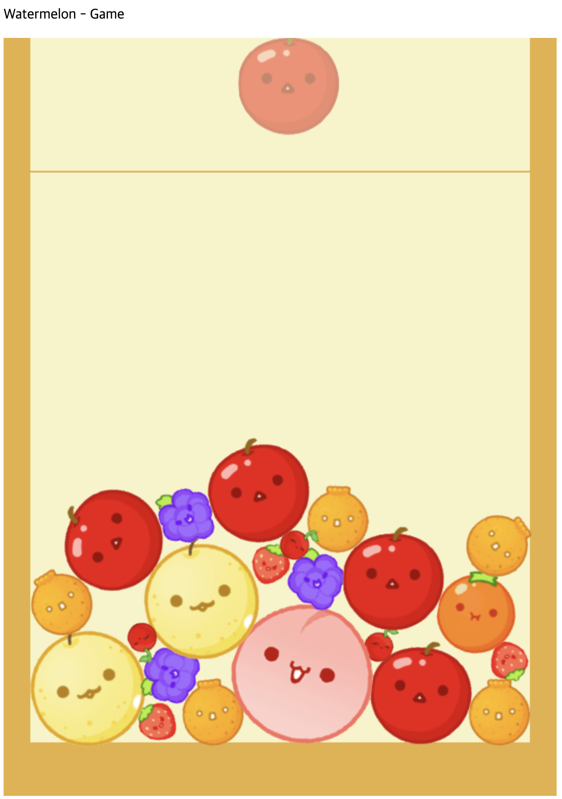

Project Overview
Suika Game is a fun physics-based puzzle game where players merge falling fruits to create larger fruits. Built using JavaScript and powered by Matter.js physics engine, this game provides a smooth and dynamic experience.
Key Features
- Physics-based Gameplay - Matter.js engine ensures realistic collisions and gravity effects.
- Fruit Merging - Identical fruits combine to form larger ones upon collision.
- Dynamic Rendering - Optimized frame updates using JavaScript and Canvas API.
- Fast Development with Vite - Instant refresh and quick build times.
Why JavaScript & Matter.js?
JavaScript provides a highly flexible and efficient development environment for web-based games. Matter.js enhances the game by introducing real-world physics with simple API integration.
- Lightweight and Fast - JavaScript and Vite ensure smooth performance.
- Physics Simulation - Realistic movement and collision detection with Matter.js.
- Cross-Browser Compatibility - Works seamlessly across different devices.
Game Mechanics
Fruit Merging Logic
// Detect collision and merge fruits
Matter.Events.on(engine, 'collisionStart', function(event) {
event.pairs.forEach(pair => {
let fruitA = pair.bodyA;
let fruitB = pair.bodyB;
if (canMerge(fruitA, fruitB)) {
mergeFruits(fruitA, fruitB);
}
});
});
Physics Engine Setup
// Create Matter.js physics world
const engine = Matter.Engine.create();
const world = engine.world;
const render = Matter.Render.create({
element: document.body,
engine: engine
});
Matter.Engine.run(engine);
Matter.Render.run(render);
How to Run
To run the project locally, follow these steps:
npm install # Install dependencies
npm run dev # Start the development server (Vite)
Conclusion
Final Game UI
Suika Game demonstrates the power of JavaScript and Matter.js in creating engaging physics-based games. With optimized performance, a dynamic physics engine, and simple yet addictive gameplay, this project serves as a great example of modern game development for the web.
More Details & Source Code
For a deeper dive into the codebase, implementation details, check out the full project on GitHub: